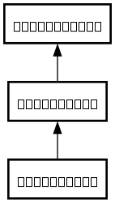

Kernel
Object Hierarchy:

Description:
public sealed class Kernel :
Module
Client for kernel and kernel module management.
Operations backed by APM2 jobs return only after completion. Kernel jobs cannot be cancelled by the server, so these methods do not
accept a GLib.Cancellable.
Content:
Methods:
- public async ModelsCleanOldKernelsResponse check_clean_old (ModelsKernelCleanOptions? options = null, owned ProgressCallback? progress = null) throws Error
- public async ModelsInstallUpdateKernelResponse check_install (string flavour, string[] modules, ModelsKernelOptions? options = null, owned ProgressCallback? progress = null) throws Error
- public async ModelsInstallKernelModulesResponse check_install_modules (string flavour, string[] modules, owned ProgressCallback? progress = null) throws Error
- public async ModelsRemoveKernelModulesResponse check_remove_modules (string flavour, string[] modules, owned ProgressCallback? progress = null) throws Error
- public async ModelsInstallUpdateKernelResponse check_update (string flavour, string[] modules, ModelsKernelOptions? options = null, owned ProgressCallback? progress = null) throws Error
- public async ModelsCleanOldKernelsResponse clean_old (ModelsKernelCleanOptions? options = null, owned ProgressCallback? progress = null) throws Error
- public async ModelsKernelCurrentResponse current () throws Error
- public async ModelsInstallUpdateKernelResponse install (string flavour, string[] modules, ModelsKernelOptions? options = null, owned ProgressCallback? progress = null) throws Error
- public async ModelsInstallKernelModulesResponse install_modules (string flavour, string[] modules, owned ProgressCallback? progress = null) throws Error
- public async ModelsKernelListResponse list_kernels (string flavour, bool installed_only) throws Error
- public async ModelsListKernelModulesResponse list_modules (string flavour) throws Error
- public async ModelsRemoveKernelModulesResponse remove_modules (string flavour, string[] modules, owned ProgressCallback? progress = null) throws Error
- public async ModelsInstallUpdateKernelResponse update (string flavour, string[] modules, ModelsKernelOptions? options = null, owned ProgressCallback? progress = null) throws Error
Inherited Members:
All known members inherited from class GLib.Object
- @get
- @new
- @ref
- @set
- add_toggle_ref
- add_weak_pointer
- bind_property
- connect
- constructed
- disconnect
- dispose
- dup_data
- dup_qdata
- force_floating
- freeze_notify
- get_class
- get_data
- get_property
- get_qdata
- get_type
- getv
- interface_find_property
- interface_install_property
- interface_list_properties
- is_floating
- new_valist
- new_with_properties
- newv
- notify
- notify_property
- ref_count
- ref_sink
- remove_toggle_ref
- remove_weak_pointer
- replace_data
- replace_qdata
- set_data
- set_data_full
- set_property
- set_qdata
- set_qdata_full
- set_valist
- setv
- steal_data
- steal_qdata
- thaw_notify
- unref
- watch_closure
- weak_ref
- weak_unref